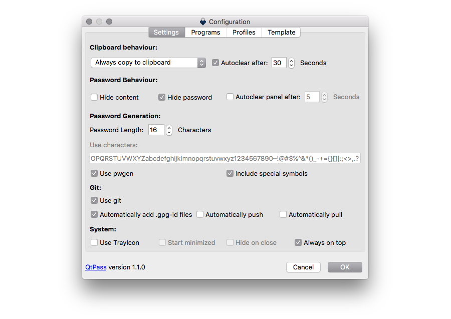
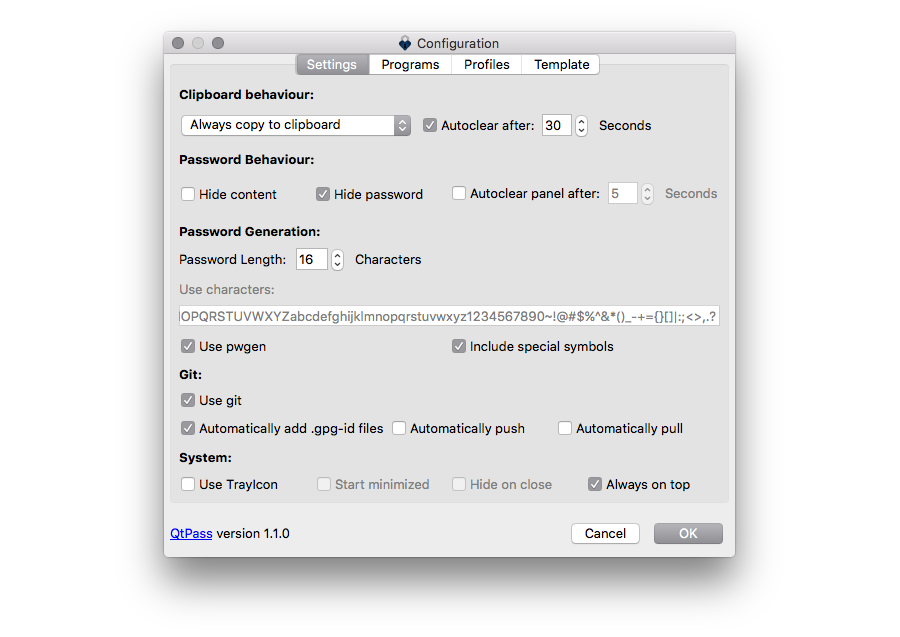

QtPass 1.4
QtPass is a multi-platform GUI for pass, the standard unix password manager.
View the Project on GitHub IJHack/QtPass
 

Installation
Linux / BSD
Arch
Latest stablepacman -S qtpasspacker qtpassyaourt -S qtpassOpenSUSE, Fedora & CentOS
Via OBS and Fedora package db up tozypper install qtpassyum install qtpassdnf install qtpassDebian, Ubuntu and derivates like Kali & Raspbian
In amongst others stableapt install qtpassGentoo
Source build packageemerge -atv qtpassVoid
Has a nie xbps packagexbps-install -Su qtpassNixOS
One of the first to addopt QtPass packagesnix-env -iA nixos.pkgs.qtpassSoleus Project
Has a stable package for QtPasseopkg install qtpassSlackware
Via SlackBuildscd qtpass && chmod +x qtpass.SlackBuild && ./qtpass.SlackBuildFreeBSD
Available as package and in the FreeBSD ports repositorypkg install qtpasscd /usr/ports/sysutils/qtpass/ && make install cleanWindows
QtPass 1.3.1Latest stable on the releases page, latest build via AppVeyor.
Via Chocolateychoco install qtpassmacOS
QtPass 1.3.1Latest stable on the releases page, latest build via AnneJan.
Via Homebrew Caskbrew install qtpass --caskQtPass works best with pass and pinentry-mac installed.
brew install pass pinentry-macDependencies
- QtPass requires Qt5.
- The Linguist package is required to compile the translations.
- For use of the fallback icons the SVG library is required.
On most *nix systems all you need is:
qmake && make && make installOn Mac OS X:
brew install qt5
brew link --overwrite --force qt5
xcode-select --install
qmake && make && macdeployqt QtPass.app